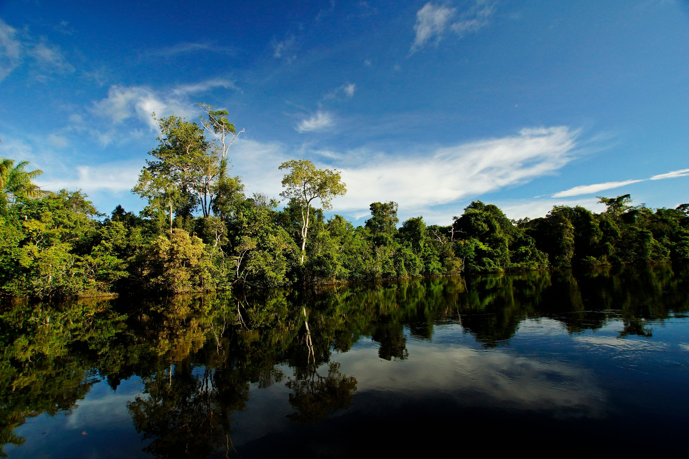

Yby Py’a
O Yby Py’a é um projeto voltado à sustentabilidade e ao impacto social, destacando a importância da reciclagem para a preservação dos ecossistemas e para a construção de um ambiente mais saudável. Seu objetivo é conscientizar a população sobre a importância do descarte correto de resíduos e da adoção de práticas sustentáveis, promovendo melhorias na saúde, no bem-estar e na qualidade de vida da comunidade.